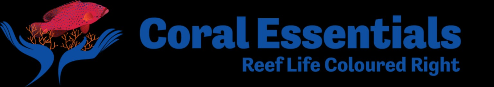

AquoraX Cloud
Sign in to save your aquarium data, dosing logs, ICP history and customisation safely.
AquoraX Cloud is active in this build. Sign in or create an account to unlock the app. Local safety saves still run first.
Sign in to save your aquarium data, dosing logs, ICP history and customisation safely.
Not connected.
The home of aquarium keeping. Build, track, and perfect your aquarium.
Your cycle is started.
Blue Shark Rapid Cycle has been recorded.
Keep testing your water and follow your Blue Shark powered AquoraX Journey as your aquarium matures.
Your simple control centre for the active aquarium.
The active tank controls everything below. No digging through menus.

Before adding full tank parameters, AquoraX needs to know if your biological filter is ready.
If you are still cycling, AquoraX will take you straight to your Blue Shark powered Journey so you can keep tracking ammonia, nitrite and nitrate.
Your latest saved readings appear here after you log a test.
Maintenance reminders for tests, dosing, water changes and equipment.
Log your first test to unlock your score.
See your recent results timeline without digging through the app.
Official AquoraX cycle journey powered by Blue Shark Trading Co. setup guidance.
Enter your tank type and system volume. Dose calculations update instantly.
Always confirm dosing with the product label and Blue Shark guidance. Do not overdose. Keep testing during the cycle.
Turn on plain-English cycle guidance for first-time aquarium keepers.
Save your first water test and AquoraX will explain the cycle in simple steps.
Review your test readings and dosing events during the cycle.
Go straight to Blue Shark cycling and water care products.
Links open in a new tab. Product availability and pricing confirmed by retailer.
AquoraX is partnered with Blue Shark Trading Co. to help new aquarists start cleaner, safer and quickly find the right Blue Shark products for their setup.
Tap the area you need help with and go directly to the right Blue Shark section.
Live overview from your latest saved water test.
Save a test in Log to update your live parameter dashboard.
Log your first test to unlock your score.
Your recommended testing targets for your selected aquarium type.
Track fish, corals, inverts, plants and algae for the active tank.
Open the part of your tank life you want to manage. Each active tank keeps its own fish, corals, inverts, plants and algae logs.
Add a coral, save its first image, then add update images later to compare growth side by side.
Add a plant, save its first image, then add update images later to compare growth side by side.
Add fish, save growth or condition photos, and track behaviour notes over time.
Track algae outbreaks, reduction progress, colour changes and treatment notes.
Track shrimp, snails, crabs, anemones and other inverts with photos and notes.
Log one parameter, a few parameters, or a full water test.
Review all saved water tests on this device.
Track your parameter trends over time.
Every saved parameter is shown together on one graph so you can see the full tank picture at once.
Values are normalised to fit together on one chart, so the graph shows movement and trends rather than exact scale.
Learn how to build and maintain the perfect aquarium.
Tap a guide below to open a simple, beginner-friendly walkthrough. More advanced guides can be added here later.
One premium reef ecosystem engine for dosing, ICP, refill prediction and brand-aware reef chemistry.

Curated dosing, core method products and ICP-ready reef intelligence.
Everything below belongs only to this tank.
Live status for this tank only.
Curated brand products for the selected reef ecosystem. Add only what this tank actually runs.
Tap a featured product above to prefill this form, then save it to the active tank.
Choose a product from the selected brand ecosystem above, or type your own product manually.
Only products saved for this tank appear here. Brand products keep their logo, image and ecosystem identity.
Based only on saved dosing products, countdowns, dose history and ICP records.
Monthly ICP users can add only the elements they test. Add and remove parameter rows as needed before saving.
Upload a Triton, Fauna Marin or general ICP screenshot/report. AquoraX will scan it, pull out reef parameters, then let you review before saving.
Everything needed to maintain the active tank: parameters, dosing, jobs and equipment.
Open the care area you need. Each section follows the active tank.
Track equipment for this tank and create maintenance jobs from service dates.
Tank maintenance reminders for water tests, dosing, water changes, cleaning and equipment.
In-app reminders are checked when AquoraX opens, so this stays safe and does not block startup.
Create reminders for regular maintenance without touching the app startup flow.
Your latest completed maintenance jobs appear here.
Customise AquoraX and manage what appears in the app.
Backup, restore or export your AquoraX data from one place.
Turn on AquoraX push notifications for this device. AquoraX handles the Firebase setup automatically.
Everything is now tucked into dropdowns so Settings stays clean. Open only the area you want to change.
Upload a custom background from your phone or computer.
Change the main glow and highlight colour.
Make text readable against your chosen background.
Control the glass effect across the whole app.
Show or hide optional panels on the Home dashboard.
Choose exactly which parameters appear on the Home dashboard.
Add anything you track manually or through ICP.
Turn on ICP results you want mirrored onto the Home dashboard.
Fully customise the result panels on Home.
Change the colour of the Home parameter boxes without affecting Journey, Dosing or Jobs.
Hold and drag the handle to move Home parameter cards around. No more star badges.
Core buttons are locked on. Extra sections can be added below.
Return AquoraX visuals and visibility settings back to default.
Your aquarium cycle looks complete. Ammonia and nitrite are at zero with nitrate present.
Confirm with another stable test before adding livestock.